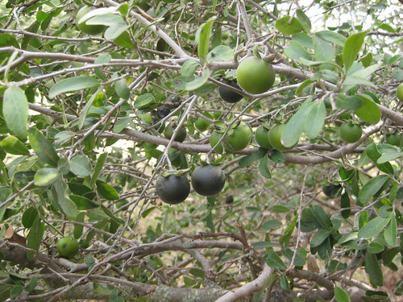
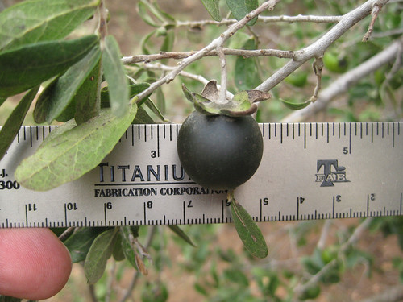
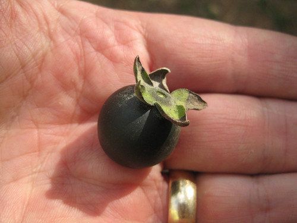
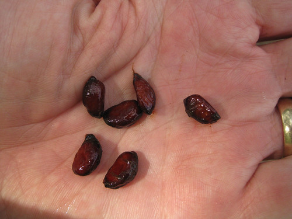
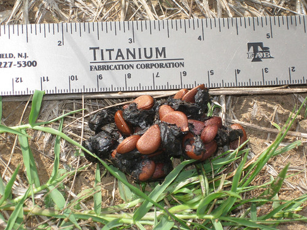
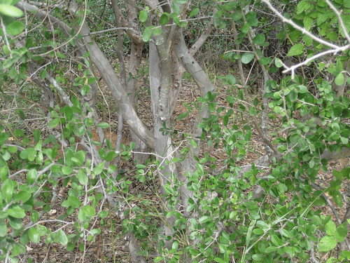
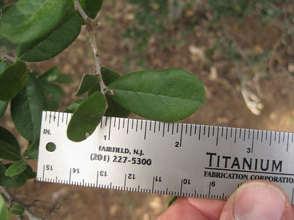
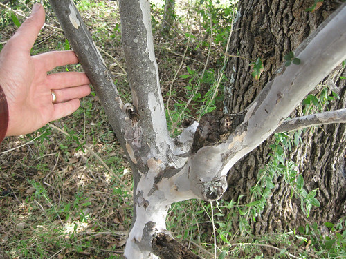

Scientific Name(s): Diospyros texana
Abundance: plentiful
What: fruit
How: raw, jams, jelly, candied, tarts
Where: fields, sunny edges of woods, arid areas
When: late summer, fall
Nutritional Value: fiber, vitamin C, B, minerals, anti-oxidants, flavonoids.
Texas persimmon fruit, both ripe (black) and unripe (green).

Close-ups of Texas persimmon fruit.


Texas persimmon seeds.

Texas persimmon seeds in animal scats (probably raccoon).

Texas persimmon shrub/tree.

Close-up of Texas persimmon leaves.

Texas persimmon trunk, next to an oak tree which shades it.

The Texas Persimmon tree is mainly found in Central and Southern Texas. One can not walk far in the Texas Hill Country without coming across the gnarled, grey shrub with grey, peeling bark. I personally love the looks of the Texas persimmon. It is generally very short, rarely over eight feet tall. They prefer to grow in partially shaded areas, such as under an oak. Most herbivore and omnivore wild animals love the ripe persimmons and I often am alerted to the trees' presence in a near area by first seeing pig scat loaded with persimmon seeds.
Persimmons aren't sweet enough to eat until they are very dark purple-black in color and already falling off the tree. The seeds are very easy to sprout, resulting in numerous persimmon trees in the same area. Like the Virginian persimmon, Texas persimmons are not self-fertile and require both male and female trees to be present for the female tree to produce fruit.
Virginian Persimmons have both male and female trees and both need to be present for fruit. Only the females produce fruit but male trees must be present to fertilize her flowers.